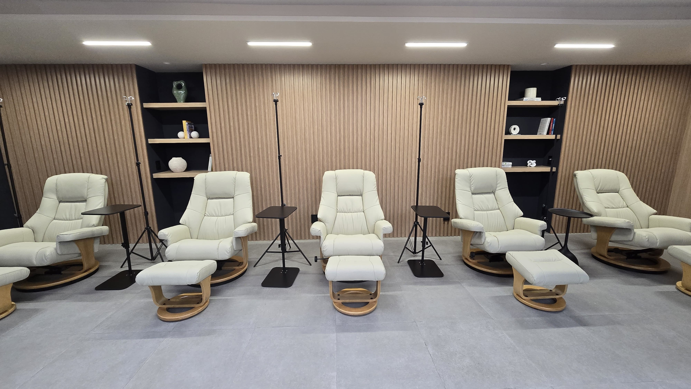

Longevidad con ciencia y propósito
Medicina funcional, nutrición y ciencia de la longevidad
En Longevité Therapeutics integramos medicina funcional, nutrición avanzada y ciencia de la longevidad para ayudarte a vivir más años con mayor vitalidad. Nuestro enfoque personalizado identifica las causas raíz de los desequilibrios de salud y ofrece terapias basadas en evidencia que optimizan tu bienestar a nivel celular.

Utilizamos investigación avanzada y terapias respaldadas científicamente, incorporando los últimos hallazgos en medicina funcional y longevidad para ofrecerte tratamientos de clase mundial.
Mantenemos una estandarización rigurosa y control de calidad en cada terapia. Nuestros protocolos siguen los más altos estándares internacionales de seguridad y eficacia.
Diseñamos planes integrales adaptados a tus necesidades individuales, enfocados en longevidad, energía y bienestar sostenible. Te acompañamos en cada paso de tu transformación.
Formamos parte de una red global de medicina funcional en constante evolución. Compartimos conocimiento y mejores prácticas para guiarte hacia una vida más larga y plena.
Cada cuerpo tiene su propio ritmo.
Nuestros protocolos se adaptan a tu biología, no al revés.
Estado de agotamiento persistente que no mejora con descanso. Abordamos las causas subyacentes como deficiencias nutricionales, disfunción mitocondrial y desequilibrios hormonales para restaurar tus niveles de energía.
El intestino es fundamental para la inmunidad y el bienestar general. Tratamos disbiosis, permeabilidad intestinal y problemas digestivos con protocolos personalizados que restauran el equilibrio del microbioma.
Protegemos la función cerebral y prevenimos el deterioro cognitivo mediante terapias que optimizan la salud neuronal, reducen la neuroinflamación y apoyan la plasticidad cerebral para mantener tu mente aguda.
El sueño reparador es esencial para la longevidad. Identificamos alteraciones del ritmo circadiano, deficiencias de neurotransmisores y factores ambientales que afectan tu descanso para mejorar la calidad del sueño.
La hidratación celular óptima es vital para todas las funciones corporales. Corregimos desequilibrios de electrolitos y volumen con terapia intravenosa que restaura la hidratación a nivel celular rápidamente.
Anticiparse a las enfermedades es más efectivo que tratarlas. Realizamos análisis avanzados para detectar desequilibrios tempranos y diseñamos intervenciones preventivas personalizadas basadas en tu perfil único.
Optimizamos la salud del corazón y los vasos sanguíneos mediante control de inflamación vascular, gestión de lípidos y mejora de la función endotelial para prevenir enfermedades cardiovasculares.
Precursor de diabetes tipo 2 y síndrome metabólico. Revertimos la resistencia a la insulina con intervenciones nutricionales, suplementación dirigida y optimización del metabolismo de la glucosa.
Optimizamos la función mitocondrial, la producción de ATP y el metabolismo celular para maximizar tus niveles de energía, mejorar la composición corporal y acelerar la recuperación física.
Mejoramos memoria, concentración y claridad mental mediante apoyo neurológico integral. Abordamos inflamación cerebral, optimización de neurotransmisores y nutrición cerebral para rendimiento cognitivo óptimo.
Fortalecemos las defensas naturales y modulamos la inflamación crónica que subyace a muchas enfermedades. Equilibramos la respuesta inmune para protección óptima sin sobreactivación.
Preservamos densidad ósea, función muscular y salud articular mediante nutrición específica, optimización hormonal y suplementación dirigida para mantener movilidad y fuerza con el tiempo.
Condición extremadamente común que afecta inmunidad, estado de ánimo y salud ósea. Corregimos niveles mediante suplementación adecuada y monitoreo para alcanzar rangos óptimos, no solo normales.
Deficiencia de hierro que causa fatiga y bajo rendimiento incluso antes de desarrollar anemia. Restauramos reservas de hierro con terapia intravenosa para recuperación rápida y efectiva.
Los hábitos diarios determinan tu salud a largo plazo. Te guiamos en optimización de nutrición, ejercicio, manejo del estrés y rutinas que promueven longevidad basándonos en evidencia científica.
Utilizamos biomarcadores avanzados, análisis genético y evaluaciones funcionales para identificar riesgos años antes de que aparezcan síntomas, permitiendo intervención temprana y prevención efectiva.
Aceleramos recuperación muscular, reducimos inflamación y optimizamos rendimiento atlético mediante terapias intravenosas, nutrición deportiva avanzada y protocolos de recuperación personalizados.
Aceleramos cicatrización, fortalecemos el sistema inmune y restauramos la función normal tras procedimientos quirúrgicos con nutrición intravenosa, antioxidantes y protocolos de regeneración tisular.
La frecuencia depende de tu estado de salud actual y tus objetivos específicos. Generalmente, iniciamos con una fase intensiva semanal o quincenal para optimizar niveles, y posteriormente pasamos a un protocolo de mantenimiento mensual. Durante tu consulta inicial, diseñamos un plan personalizado basado en tus análisis de laboratorio y necesidades individuales.
Las terapias intravenosas son muy seguras cuando se administran por profesionales capacitados. Ocasionalmente puede haber ligera molestia en el sitio de punción o una sensación temporal de calor durante la infusión, síntomas que son completamente pasajeros. Seguimos protocolos estrictos de seguridad y realizamos evaluación médica completa antes de cualquier tratamiento para minimizar cualquier riesgo.
La diferencia es significativa. La vía intravenosa asegura absorción del 100% de los nutrientes directamente al torrente sanguíneo, resultando en efectos más rápidos y niveles terapéuticos mucho más altos. La vía oral depende de la digestión y puede tener una absorción de solo 10-30%, especialmente en personas con problemas intestinales. Para objetivos terapéuticos serios, la vía IV es incomparablemente más efectiva.
Sí, absolutamente. Realizamos una evaluación clínica completa y solicitamos estudios de laboratorio específicos antes de iniciar cualquier protocolo de terapia intravenosa. Esto nos permite personalizar completamente el tratamiento a tus necesidades únicas, identificar deficiencias específicas y garantizar la máxima seguridad y efectividad. No trabajamos con protocolos genéricos; cada plan es diseñado científicamente para ti.
El tiempo de respuesta varía según la terapia y tu estado inicial. Muchos pacientes experimentan mejoras notables de energía y claridad mental desde la primera sesión, especialmente con terapias como Myers' Cocktail, NAD+ o Rehydration. Beneficios más profundos como optimización inmunológica, reparación celular y mejoras metabólicas se perciben gradualmente a lo largo de varias sesiones. El monitoreo continuo nos permite ajustar el protocolo para resultados óptimos.
Sí, la terapia intravenosa es altamente complementaria con la medicina convencional. De hecho, puede potenciar muchos tratamientos tradicionales y acelerar la recuperación. Trabajamos en coordinación con tu equipo médico actual para asegurar un enfoque integrado y seguro. Es importante informarnos sobre todos tus medicamentos actuales durante la evaluación inicial para optimizar la sinergia terapéutica.
Las contraindicaciones dependen de cada terapia específica. Personas con insuficiencia renal, hepática o cardiaca severa pueden requerir protocolos especiales o ajustes de dosis. Ciertas terapias no se recomiendan durante el embarazo o lactancia. Por esto es esencial la valoración médica inicial completa, donde evaluamos tu historial clínico detallado, medicaciones actuales y resultados de laboratorio para determinar el protocolo más seguro y efectivo para ti.
Pedregal #47, Col. Lomas Virreyes
Ciudad de México